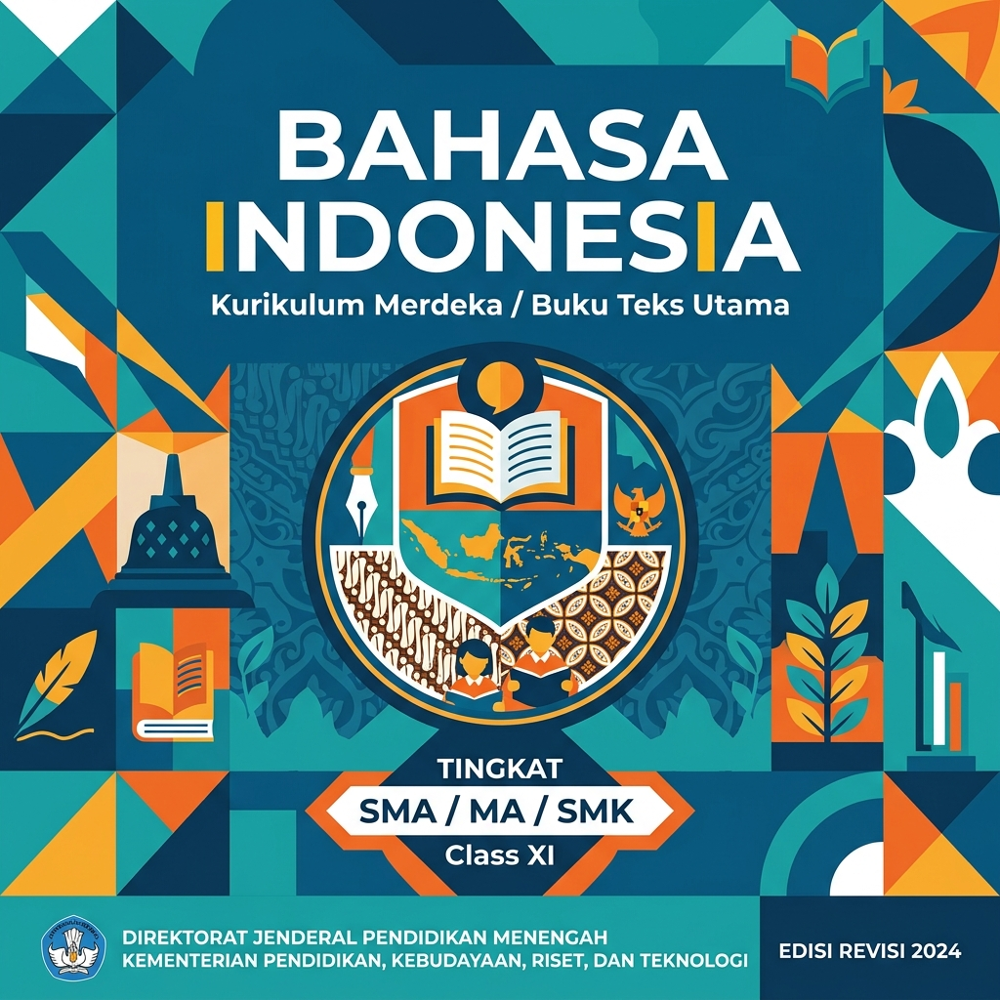
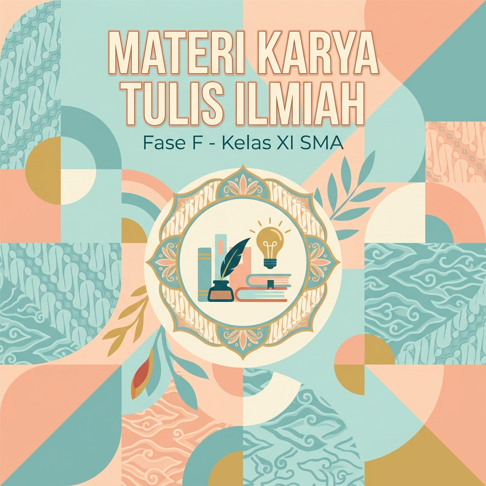
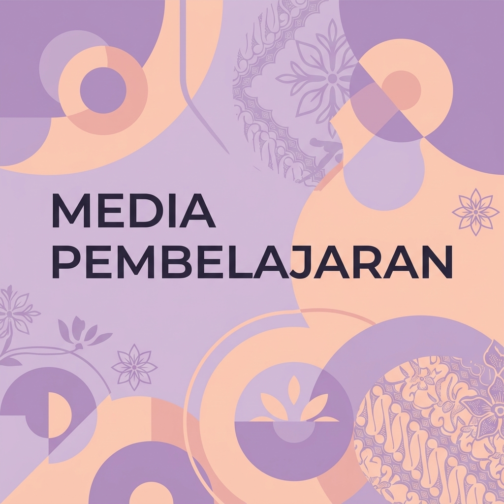
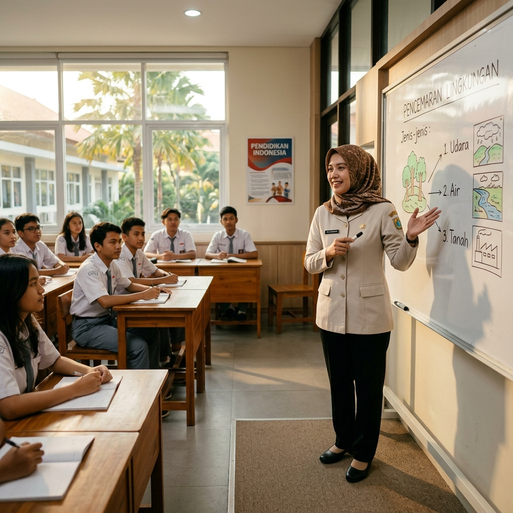
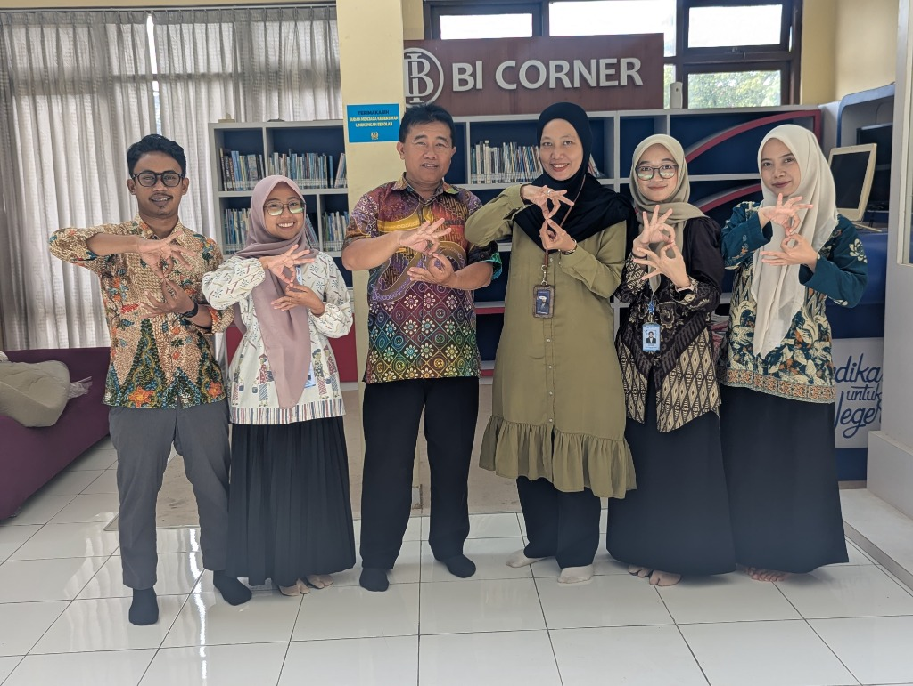
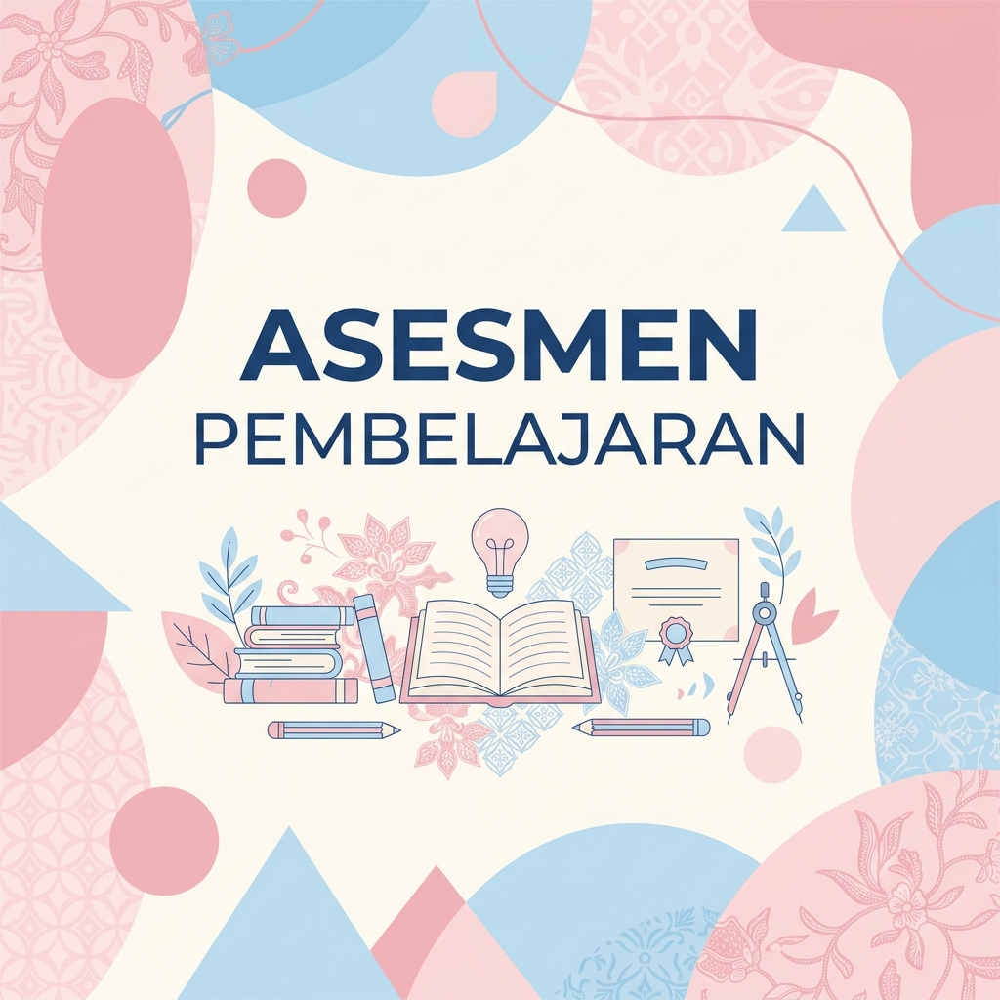

Analisis Produk Rancangan / Perencanaan Pembelajaran untuk Praktik Mengajar Mandiri
Dokumentasi modul ajar Kurikulum Merdeka Fase E (Kelas X SMA) materi Teks Anekdot Pertemuan 1. Dirancang secara mandiri dengan mengintegrasikan sintaks Problem Based Learning (PBL), pendekatan Teaching at the Right Level (TaRL), dan Culturally Responsive Teaching (CRT).

Modul Ajar Teks Anekdot (Pertemuan 1)
Rancangan perangkat ajar mandiri Bahasa Indonesia Fase E Bab 2 "Mengungkapkan Kritik Lewat Senyuman". Memuat Capaian Pembelajaran, tujuan telaah struktur & pesan tersirat, sintaks model PBL, serta skenario diferensiasi proses dan produk.
Analisis & Refleksi Kritis Rancangan
Refleksi komprehensif berdasarkan 4 dimensi pedagogis pembelajaran mandiri
Kesesuaian CP, TP, & Karakteristik Murid
Modul menyelaraskan CP elemen Membaca dan Memirsa dengan TP: menganalisis gagasan, pesan tersirat, dan kritik sosial dalam teks anekdot. Disusun berdasarkan asesmen awal minat dan literasi murid Fase E yang responsif terhadap narasi visual.
Integrasi TaRL, CRT, & Scaffolding
Menerapkan Teaching at the Right Level (TaRL) lewat variasi teks stimulus (komik strip bergambar untuk kelompok berkembang, naskah transkrip opini untuk kelompok mahir). Pendekatan CRT mengangkat fenomena layanan publik lokal yang akrab dengan keseharian siswa.
Kendala Perancangan & Solusi Alternatif
Tantangan perancangan terletak pada manajemen durasi 2x45 menit antara identifikasi struktur (abstraksi-koda) dengan bedah kritik tersirat. Solusinya adalah menyusun LKPD berbasis tabel dekonstruksi cepat dengan panduan kata kunci pemandu.
Faktor Keberhasilan & Rencana Tindak Lanjut
Sintaks PBL efektif mendorong keberanian siswa berpendapat kritis dalam suasana humor interaktif. Rekomendasi tindak lanjut adalah memperjelas batasan etis antara humor satir yang santun dengan ujaran sarkastik pada rubrik panduan.
Analisis Materi Pembelajaran yang Sudah Disusun dan Diterapkan Praktik Mengajar Mandiri
Telaah kritis terhadap bahan ajar Teks Anekdot Pertemuan 1. Berfokus pada pembedaan konseptual antara humor murni dengan kritik sosial tersirat, dekonstruksi 5 struktur teks, serta penguasaan kaidah kebahasaan yang kontekstual bagi murid Fase E.

Bahan Ajar Teks Anekdot: Kritik Lewat Senyuman
Handout materi pembelajaran terstruktur yang memuat konsep esensial teks anekdot: karakteristik, fungsi sosial kritik konstruktif, struktur narasi (abstraksi hingga koda), dan ragam majas sindiran (ironi, sinisme, sarkasme).
Analisis & Refleksi Kritis Materi
Evaluasi kedalaman materi, keakuratan konsep, dan relevansi penerapan
Kedalaman & Keakuratan Konseptual
Materi membedakan secara rigid antara lelucon hiburan (*joke*) dengan teks anekdot (*anecdote*). Konsep kritik tersirat dijabarkan melalui dekonstruksi kalimat fakta vs opini sehingga terbebas dari bias miskonsepsi.
Kontekstualisasi & Relevansi Otentik
Teks stimulus mengangkat isu nyata seputar antrean layanan publik dan interaksi media sosial remaja, mendorong keterikatan emosional murid saat membedah pesan moral dan kritik yang disampaikan pengarang.
Keterjangkauan & Daya Serap Murid
Infografik bagan alur krisis-reaksi dan glosarium istilah sastra mempermudah murid menyerap konsep teknis tanpa kelelahan kognitif (*cognitive load*), terbukti dari kelancaran diskusi LKPD.
Diferensiasi Konten & Rencana Pengayaan
Disediakan teks komparasi transkrip lawakan tunggal (*stand-up comedy*) untuk kelompok mahir, serta teks berpenanda warna (*color coding*) untuk murid yang memerlukan pendampingan pengenalan struktur.
Analisis Media Pembelajaran yang Dipergunakan dalam Praktik Mengajar Mandiri
Refleksi pemanfaatan media multimodal berbasis teknologi interaktif (slide presentasi Canva, stimulus video komika, dan komik strip digital) untuk mengkonkretkan konsep kritik tersirat dalam Teks Anekdot Pertemuan 1.

Media Pembelajaran Interaktif Teks Anekdot
Rangkaian media presentasi visual Canva interaktif dan media stimulus audio-visual (rekaman monolog komedi & komik strip digital) yang digunakan untuk apersepsi, pemodelan struktur, dan presentasi kelompok.
Analisis & Refleksi Kritis Media
Analisis kegunaan, keterlibatan peserta didik, dan efisiensi teknologi
Kesesuaian Media dengan Karakter Materi
Penayangan video komika dan karikatur tunggal sangat selaras dengan hakikat teks anekdot; menjembatani konsep "kritik tersirat" menjadi stimulus konkret yang memantik gelak tawa dan nalar kritis siswa.
Daya Tarik & Interaktivitas Siswa
Fitur tebak pesan tersirat pada slide Canva memancing keaktifan spontan. Siswa berani berebut mengemukakan penafsiran tanpa rasa takut salah karena dikemas dalam suasana permainan telaah humor.
Kendala Teknis & Mitigasi Lapangan
Koneksi internet sekolah sempat tersendat saat memutar video resolusi tinggi. Kendala teratasi cepat karena mahasiswa telah menyiapkan video luring di penyimpanan lokal serta lembar cetak transkrip dialog.
Rekomendasi Modifikasi & Inovasi
Perlu ditambahkan media respon kilat seperti Wordwall atau Mentimeter di akhir apersepsi agar seluruh siswa dapat berpartisipasi secara simultan dalam mengecek pemahaman konsep awal.
Analisis Video Pelaksanaan Praktik Mengajar Mandiri
Refleksi kritis atas rekaman video pelaksanaan pembelajaran mandiri materi Teks Anekdot Pertemuan 1. Menganalisis kompetensi pedagogis guru, penerapan sintaks Problem Based Learning (PBL), interaksi kelas, dan manajemen waktu berpedoman pada lembar LK-3 Refleksi Mengajar.

Rekaman Video Praktik Mengajar Mandiri
Video rekaman pembelajaran nyata kelas Fase E materi Teks Anekdot P1. Tautan video YouTube menyusul dan dapat ditautkan sewaktu-waktu. Analisis performa mengajar telah disusun lengkap berdasarkan lembar refleksi diri (LK-3).
Analisis & Refleksi Rekaman Video
Analisis penampilan mengajar, interaksi kelas, dan manajemen waktu
Keterampilan Apersepsi & Motivasi Awal
Guru membuka kelas dengan salam hangat, presensi berbasis kesiapan emosi, dan memutar video komika pendek. Pertanyaan pemantik: "Mengapa kita sering menertawakan hal yang sebenarnya merupakan kritik sosial?" berhasil memfokuskan atensi murid sejak menit awal.
Keterlaksanaan Sintaks Problem Based Learning
Sintaks PBL berjalan runtut dari orientasi masalah teks anekdot janggal, pembagian kelompok heterogen, penyelidikan struktur (krisis & reaksi), hingga presentasi hasil kerja kelompok yang saling menanggapi secara konstruktif.
Manajemen Kelas, Gestur, & Komunikasi
Guru menunjukkan mobilitas aktif berkeliling mendekati meja siswa yang membutuhkan scaffolding, menggunakan intonasi suara modulatif yang jelas, serta memberikan penguatan verbal (*positive reinforcement*) yang hangat.
Keterampilan Menutup & Refleksi Bersama
Sesi penutup dimanfaatkan untuk merangkum esensi nilai kritik santun bersama murid. Guru memberikan asesmen formatif kilat (tiket keluar/exit ticket), mengapresiasi dinamika kelompok, dan menyampaikan topik pertemuan kedua.
Analisis Kegiatan Nonmengajar
Dokumentasi dan refleksi mendalam atas pelaksanaan tugas profesional guru di luar jam mengajar kelas: Piket 5S di gerbang sekolah, Pendampingan Solat Jamaah, serta Asistensi Mengawas ASTS (Asesmen Sumatif Tengah Semester) di sekolah mitra.

Laporan Refleksi Kegiatan Nonmengajar
Kompilasi dokumentasi pengalaman lapangan dan refleksi kritis mahasiswa PPL dalam membangun kultur positif sekolah melalui 3 kegiatan utama: pembiasaan 5S, pembinaan religius salat jamaah, dan kepengawasan ujian ASTS.
Analisis & Refleksi Kegiatan Nonmengajar
Refleksi integrasi sosial, manajemen persekolahan, dan pembentukan jati diri pendidik
Piket 5S di Gerbang Sekolah
Refleksi peran menyambut kedatangan murid di gerbang pagi hari melalui budaya 5S (Senyum, Salam, Sapa, Sopan, Santun). Terbukti efektif membangun rasa aman, menumbuhkan disiplin kerapian seragam, dan mendeteksi kondisi kesiapan mental anak sejak awal tiba di sekolah.
Pendampingan Solat Jamaah
Refleksi keterlibatan mengoordinasikan saf salat, ketertiban wudhu, dan keheningan zikir-doa bersama pada pembiasaan salat dzuhur/dhuha berjamaah di mushola sekolah. Menjadi wahana nyata penguatan Profil Pelajar Pancasila beriman-bertakwa dan keteladanan moral spiritual guru.
Asistensi Mengawas ASTS
Pembelajaran manajerial dalam kepengawasan Asesmen Sumatif Tengah Semester (ASTS). Mahasiswa mengawal ketertiban ruang ujian, membagikan naskah/token asesmen, menegakkan integritas kejujuran akademik siswa tanpa intimidasi, serta merapikan berita acara ujian.
Internalisasi Jati Diri Guru Seutuhnya
Sintesis bahwa kompetensi seorang pendidik profesional melampaui kecakapan kurikulum di dalam kelas. Keteladanan akhlak, kemampuan berbaur dengan sivitas sekolah, dan dedikasi menjaga ketertiban membentuk fondasi jati diri guru seutuhnya.
Instrumen Penilaian yang Dirancang Beserta Analisisnya
Perangkat asesmen Kurikulum Merdeka materi Teks Anekdot Pertemuan 1: asesmen diagnostik kognitif/non-kognitif, asesmen formatif (LKPD telaah struktur dan kritik sosial), rubrik analitik 4 skala objektif, serta rencana tindak lanjut remedial dan pengayaan.

Instrumen Asesmen & Rubrik Teks Anekdot
Kumpulan instrumen evaluasi pembelajaran lengkap: kisi-kisi penilaian, lembar kerja murid (LKPD) analisis krisis dan pesan tersirat, rubrik analitik objektif, dan pedoman konversi skor ketuntasan belajar.
Analisis Hasil & Kualitas Instrumen
Evaluasi validitas instrumen, objektivitas rubrik, dan refleksi ketuntasan murid
Kesesuaian Kisi-Kisi dengan TP
Instrumen asesmen formatif (LKPD Teks Anekdot) secara presisi mengukur dua indikator utama TP: 1) ketepatan memetakan 5 struktur teks (abstraksi-koda), dan 2) ketajaman menafsirkan pesan kritik sosial di balik unsur kelucuan.
Objektivitas & Deskriptor Rubrik
Rubrik analitik memecah penilaian secara transparan: kedalaman analisis kritik (40%), kelengkapan identifikasi struktur (30%), bukti kutipan teks (20%), serta ketepatan ejaan bahasa (10%), menghindari subjektivitas penilaian guru.
Sebaran Hasil Belajar & Ketuntasan
Hasil pengerjaan LKPD menunjukkan 85% siswa mencapai Kriteria Ketercapaian Tujuan Pembelajaran (KKTP). Kesulitan tersisa pada 15% murid adalah membedakan batas kalimat antara bagian krisis dan reaksi pada teks naratif padat.
Rencana Tindak Lanjut: Remedial & Pengayaan
Tindak lanjut remedial dilakukan dengan kartu pemandu alur krisis bagi siswa yang belum tuntas. Sedangkan murid yang telah melampaui KKTP ditugaskan menganalisis komparasi pesan satir pada karikatur media massa daring.